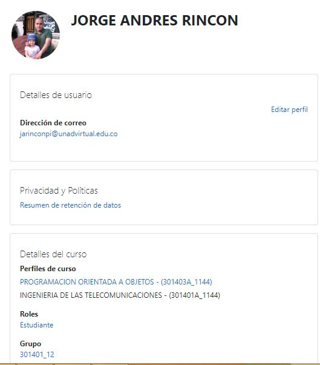

Tecnologias De La Informacion y Las Telecomunicaciones
Inicio
Asistencia y Trabajo
Teleasistencia
Teletrabajo
Medicina y Educacion
Telemedicina
Tele-educacion
Comercio Electronico
Televentas
Acerca de
Autor
